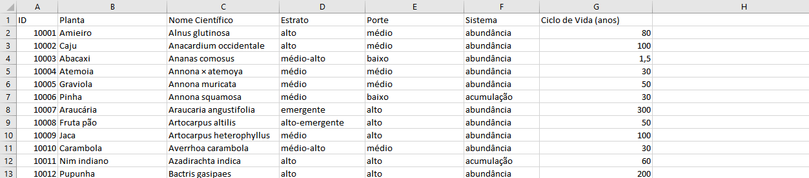
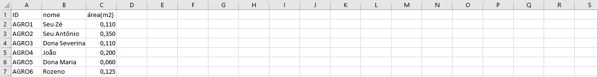
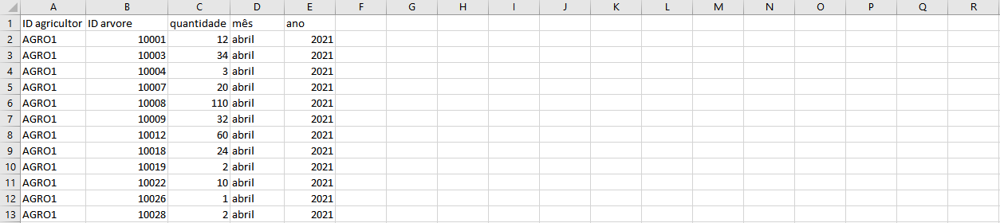
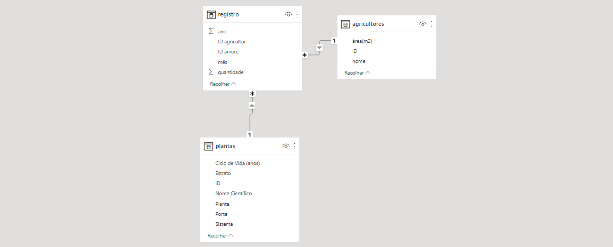
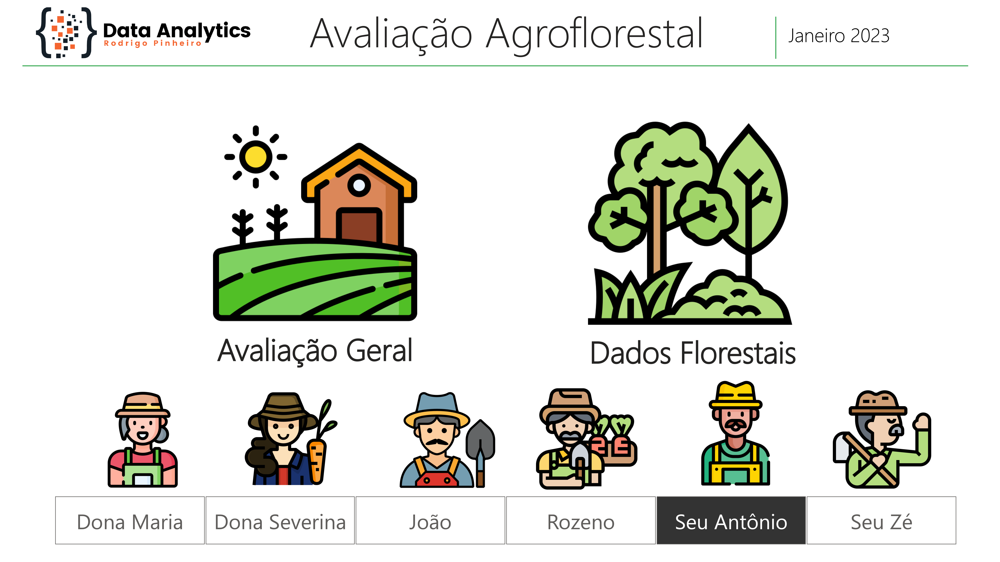
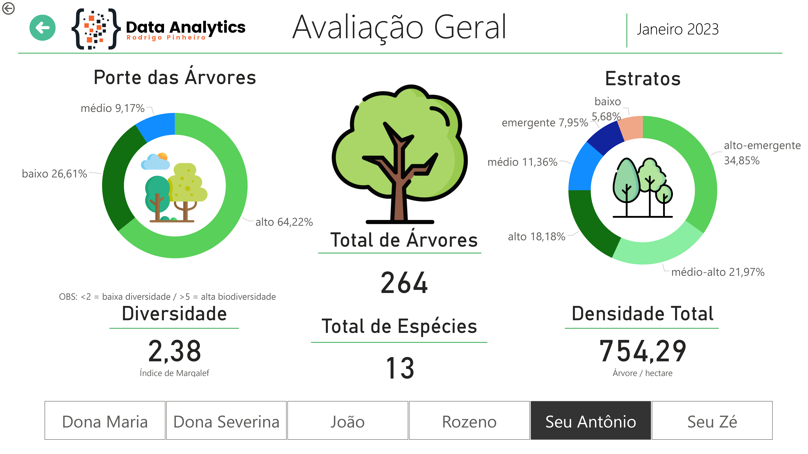
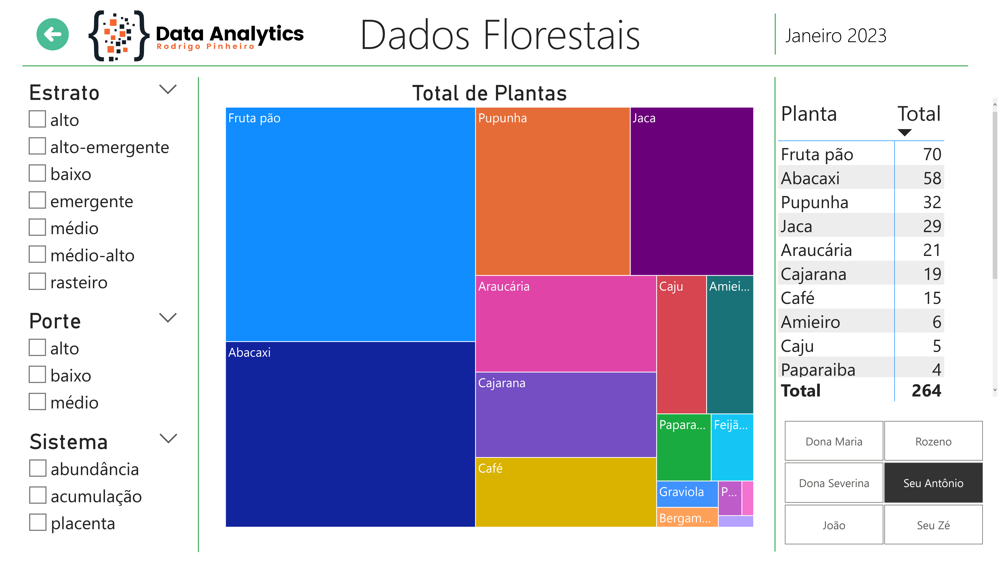
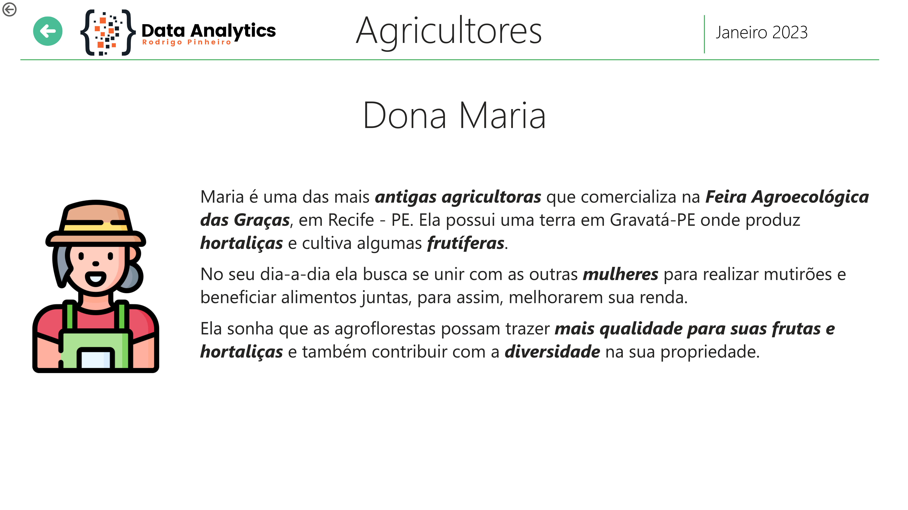

Análise de dados na avaliação de Sistemas Agroflorestais
Com a crescente preocupação com a sustentabilidade e a segurança alimentar, a agroecologia tem se tornado cada vez mais importante. A agroecologia é uma abordagem para a agricultura que busca integrar as práticas agrícolas e ecológicas, com o objetivo de produzir alimentos saudáveis e sustentáveis, além de promover a biodiversidade e a resiliência dos ecossistemas. Nesse contexto, a análise de dados pode desempenhar um papel crucial no planejamento e na produção agroecológica.
A análise de dados permite que o técnico em agroecologia avalie dados da saúde do solo, a qualidade da água, a biodiversidade local, entre outros aspectos importantes para a produção agroecológica. Com esses dados, o técnico pode identificar problemas e desafios específicos, e elaborar um plano de ação que leve em consideração as condições locais e as necessidades dos agricultores e da comunidade.
Assim, neste projeto, busco utilizar ferramentas de análise de dados como Power BI, Excel e em breve SQL para realizar um acompanhamento técnico de Sistemas Agroflorestais (SAFs). Sistemas agroflorestais (SAFs) são práticas agrícolas que integram árvores, arbustos, plantas e animais em um mesmo sistema produtivo. Esses sistemas são baseados em princípios agroecológicos, que buscam a sustentabilidade e a resiliência dos ecossistemas, além de promover a diversidade de espécies e a produção de alimentos saudáveis e nutritivos.
Como modelo de base de dados foi usado planilhas do Excel contendo três informações principais:
- Dados das plantas
- Dados dos agricultores
- Dados dos registros de campo
Dados das plantas
Dados dos agricultores
Dados dos registros de campo
No primeiro momento foi carregado os dados pelo Power BI e criado as relações entre as planilhas:
A partir dos dados coletados foram idealizados três dashboards principais:
Tela principal:
Nesta tela o usuário poderá selecionar qual agricultor gostaria de visualizar os dados. Poderá também escolher quais informações acessar: Avaliação Geral ou Dados Florestais. E ao clicar sobre os agricultores o usuário será levado para uma pequena biografia de cada um deles.
Avaliação geral da propriedade dos agricultores:
O acompanhamento da biodiversidade de agroflorestas é uma prática fundamental para o manejo sustentável desses sistemas agrícolas. Um monitoramento eficaz pode ajudar os produtores a avaliar a saúde do sistema, identificar problemas e planejar ações de manejo. Esta avaliação geral pode fornecer informações valiosas para a tomada de decisões sobre o uso adequado da terra, a escolha de novas espécies a serem introduzidas e a gestão da produção, etc.
- 1) O porte de uma árvore é uma característica que se refere ao tamanho e à forma de crescimento de uma árvore.
- 2) O estrato de uma planta é a camada ou nível de altura em uma floresta ou comunidade vegetal a qual a planta se desenvolve.
- 3) O Índice de Margalef é um indicador utilizado para avaliar a riqueza de espécies em uma comunidade. Ele leva em consideração o número de espécies presentes em uma amostra e o número de indivíduos de cada espécie. O cálculo do índice é feito dividindo o número total de espécies pela logaritmo natural do número de indivíduos
- 4) O Indicador de Densidade Florestal é um importante parâmetro utilizado para avaliar a quantidade de árvores em uma determinada área. Esse indicador é comumente medido pelo cálculo de árvores por hectare, ou seja, quantas árvores existem em um hectare de terra.
Dados florestais:
Neste dashboard o usuário porderá conferir de maneira dinâmica as plantas que compõem cada propriedade avaliada, bem como selecionar as caracteísticas desejadas para análises mais específicas.
É importante visualizar bem as características florestais da propriedade porque cada espécie desempenha um papel específico no ecossistema. Algumas plantas podem fixar nitrogênio no solo, outras podem ser importantes para a alimentação de animais, outras ainda podem ser utilizadas como medicamentos ou em processos industriais. Além disso, cada espécie pode ter diferentes exigências nutricionais, de luz e de água, o que pode influenciar a escolha das culturas e sua disposição espacial no sistema agroflorestal.
Biografia dos agricultores:
Cada agricultor recebeu uma mini-biografia que poderá ser acessada através da tela inicial.
Considerações Finais
Após a estruturação e a elaboração dos modelos de avaliação agroflorestal, percebe-se que a utilização de ferramentas como o Power BI e Excel, em conjunto com o conhecimento técnico da Agroecologia, tem grande impacto para o sucesso das práticas sustentáveis executadas pelos técnicos e agricultores.
Com os dados certos em mãos, os técnicos, podem assim, orientar os agricultores a tomar decisões mais eficientes sobre o manejo do terreno e a adoção de práticas mais sustentáveis, indicando as melhores espécies a serem introduzidas de acordo com o que foi avaliado ou a necessidade de intervenções para fortalecer o solo ou os Sistemas Agroflorestais Podendo ainda, acompanhar o desenvolvimento dessas intervenções ao longo do tempo.
Em resumo, a avaliação agroflorestal dos SAFs se beneficia muito junto as ferramentas e técnicas corretas de análise. Pois, desse modo é possível promover a sustentabilidade e a segurança alimentardas comunidades rurais , garantindo mais saúde e resiliência dos Sistemas Agroflorestais e dos próprios agricultores.
Muito Obrigado pela leitura!
(caso queira fazer algum comentário, entre em contato através de minhas redes socias)